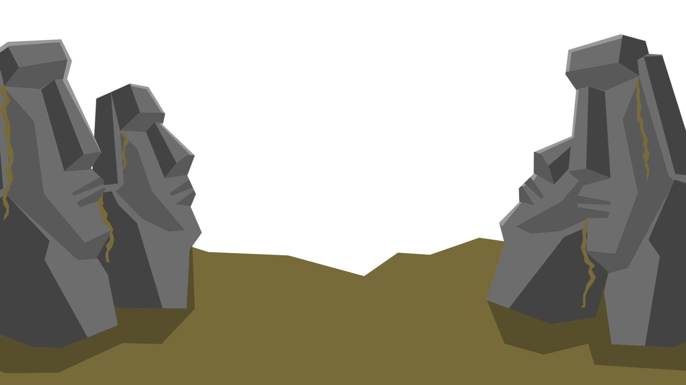

ISLA MYSTERIO
Explore ABOUT ME
STUDENT DEVELOPER
Hi! My Name is Marc Warren, and I know you're here because you're curious and want to learn more about me. Well, it's your lucky day!
First and foremost, I would like to thank you for taking your time to read my bio.
WHAT AM I?
I'm a Student Developer and I have years of Experience in programming, I'm not an Expert on any field, but I know my way on different languages such as LUA, C#, and many more. I mainly focus on creating and developing games, that is why I'm more familiar with Game Developing languages. I mainly practice making games when I have the time, Developing games is really great and while you're having fun you can learn new things.
BEYOND PROGRAMMING
I'm a Freelance Graphics Designer, Video Editor and a Novice 3D Modeler. Just like my Programming Skills, I also have years of experience in Editing Videos and creating Digital Graphics, Just like the assets that you see here in my website. I Mainly do things about the Gaming Industry and most of my work is focused on Gaming. I'm also doing small modelling in 3D for the games I'm trying to make and develop.
ABOUT MY PROJECTS
Most of my Projects are created for other people, I cannot show alot, mostly because majority of the things I do is for Academic Purposes and cannot be shared to to the Public. If you want to see some of my work go to Projects Tab or Shop Tab.